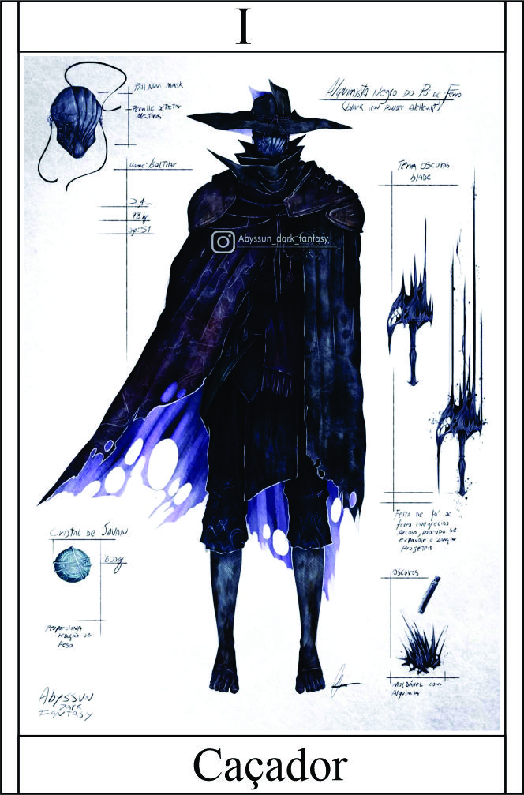

Caçador
Têndencia: Neutro
Passiva - Forjador de Destinos:
O caçador possui um vasto arsenal de armas especializadas para enfrentar diferentes tipos de criaturas sobrenaturais. Cada arma possui poderes únicos que podem ser utilizados estrategicamente durante o combate, proporcionando ao caçador vantagens contra inimigos específicos.
- Adaga das Sombras: Uma adaga enegrecida capaz de cortar as amarras do plano etéreo, permitindo que o caçador ataque e cause dano em seres incorpóreos e espirituais.
- Dano: (Destreza + Arma Branca) + 3 | acerto + 1
- Besta de Prata: Uma besta de alta precisão com setas de prata, capaz de perfurar a pele resistente de criaturas sobrenaturais, causando dano aprimorado contra lobisomens, vampiros e outros seres noturnos.
- Dano: (Destreza + Arma de Fogo) + 1 | acerto + 2 | Contra criaturas sobrenaturais dano adicional +3
- Lâmina Sagrada: Uma espada imbuida de energia sagrada, capaz de dissipar escudos mágicos e causar dano extra a seres demoníacos e malignos.
- Quebra de defesas e Dano: (Força + Arma Branca) + 1
- Estaca de Madeira: UUma estaca afiada de madeira, capaz de perfurar o coração de vampiros e incapacitá-los instantaneamente.
- Estilhaçadora do Caos: Um par de luvas com lâminas retráteis, envolvidas em sombras, que permitem ao caçador atacar com agilidade e velocidade sobrenaturais, desferindo golpes precisos e rápidos.
- Ataca +2 vezes | Dano: (Destreza + Arma Branca) + 1 | +2 acerto
- Resolver (Revólver) do Destino: Um O Revólver do Destino é uma arma de fogo singular, com um design elegante e um cano reluzente. É conhecido por possuir um poderoso encantamento que concede ao caçador o controle sobre a sorte e o destino. Cada tiro disparado pelo Revólver do Destino tem a capacidade de influenciar o curso dos eventos, alterando sutilmente a probabilidade em favor do caçador
Ao acionar o gatilho, o caçador pode direcionar a trajetória da bala para atingir pontos fracos dos inimigos, aumentar as chances de acerto crítico ou até mesmo desviar de ataques direcionados contra ele. O poder do Revólver do Destino está intrinsecamente ligado à habilidade do caçador em aproveitar as oportunidades criadas por essa influência sobre o destino.
No entanto, vale ressaltar que o poder do Revólver do Destino não é absoluto e está sujeito a limitações. O caçador precisa ser habilidoso e estratégico ao utilizar essa arma para aproveitar ao máximo seu potencial e garantir a vitória em suas caçadas.- Detalhes:
- Dano: (Raciocinio + Arma de Fogo) + 6
- Destino Cenário: Se Algo relação ao cenário, o mestre vai jogar um dado para dificuldade para mudar o destino, com sucesso poderá fazer essa alteração.
- Destino Interpessoal: O alvo escolhido poderá fazer um teste de Vigor + Auto-Controle.
- Destino Critico: Para cair critico com Resolver é 3 para cima
- Munição: Você tem somente 6.
- Recarga: Ao mata algo epico aparece bala.
Legado 1 - Emboscada Prateada:
O caçador conjura uma esfera em suas mãos e, ao ativá-la ou arremessá-la, ela explode em uma cortina densa de fumaça de pó de prata. Essa fumaça envolve a área ao redor, obscurecendo a visão e tornando todos os inimigos neutros, maus e malignos vulneráveis a danos.
Dentro da cortina de fumaça, o caçador se torna praticamente invisível e é capaz de se movimentar silenciosamente, aproveitando a confusão para atacar seus alvos de forma sorrateira e precisa. Os inimigos afetados pela fumaça têm dificuldade em detectar a localização exata do caçador e ficam expostos a seus ataques surpresa.
A duração da cortina de fumaça e da vulnerabilidade dos inimigos é de três rodadas. Durante esse período, o caçador pode escolher quando e como atacar, aproveitando a vantagem tática proporcionada pela habilidade.
É importante ressaltar que, apesar da vantagem concedida pela Emboscada Prateada, os inimigos ainda têm a chance de perceber a presença do caçador por meio de outros sentidos, como audição ou olfato aguçados. Além disso, a habilidade requer estratégia e timing adequados para aproveitar ao máximo seu potencial de emboscada.
+2 Furtividade e inimigos dentro da cortina com tendências malignas ou neutro mal, recebe dano adicional de todas fontes nessa curtina de fumaça +2 de dano
Condição
Conjura somente 1 vez até proximo combate.